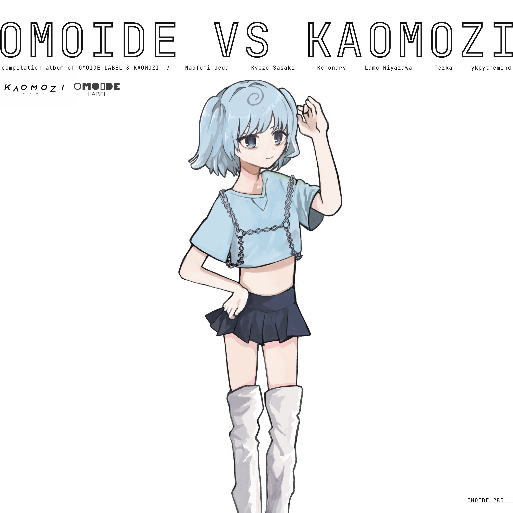
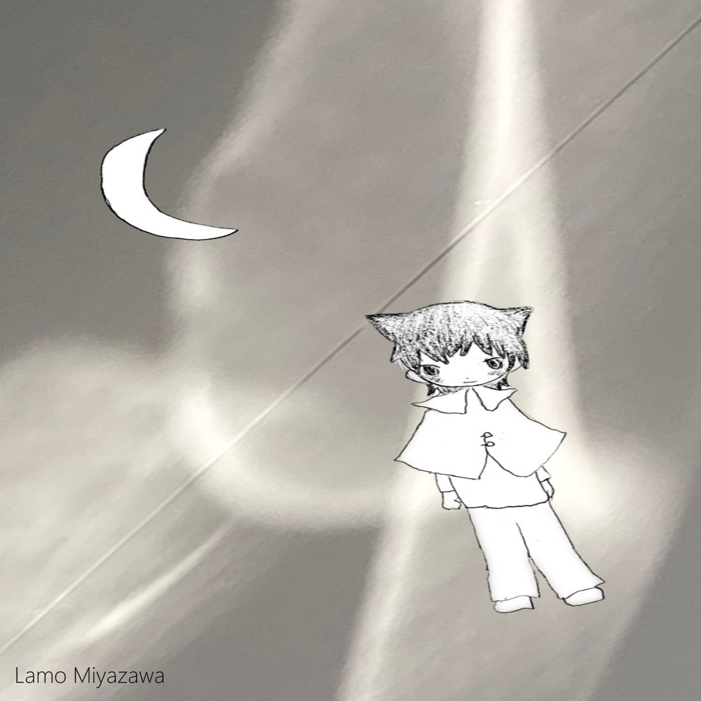
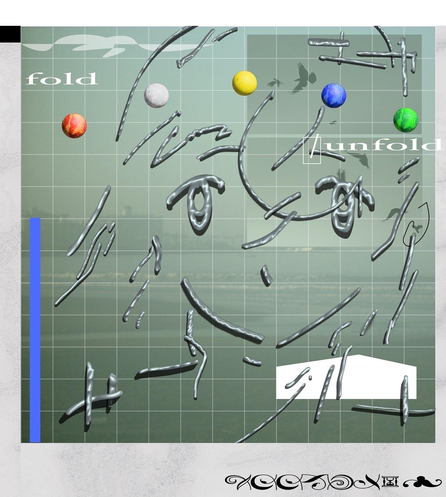

update 2024.6
コンピレーションアルバムからリリースしている楽曲を紹介します．
・2024.6.7 release
水の精霊
from OMOIDE vs KAOMOZI Label
track number 4

Artwork : Ren Komasawa ・2024.4.7 release
宙のかけら
from 「SALVAGE」 Waterplant Label
track number 29

Artwork : Lamo Miyazawa・2024.3.15 release
Childhood
from「fold/unfold」GoodNews
track number 6

Artwork : Sou Nozaki